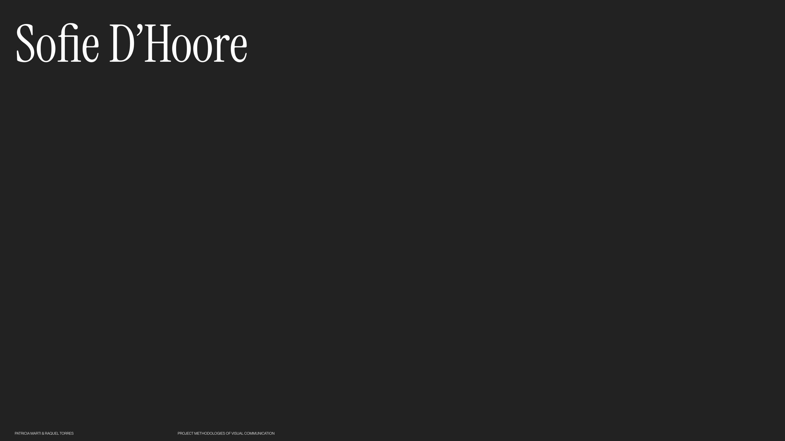
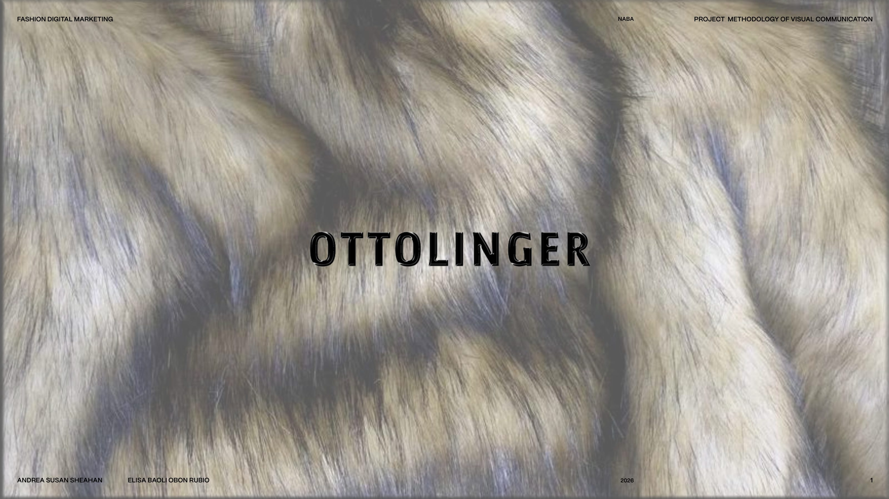
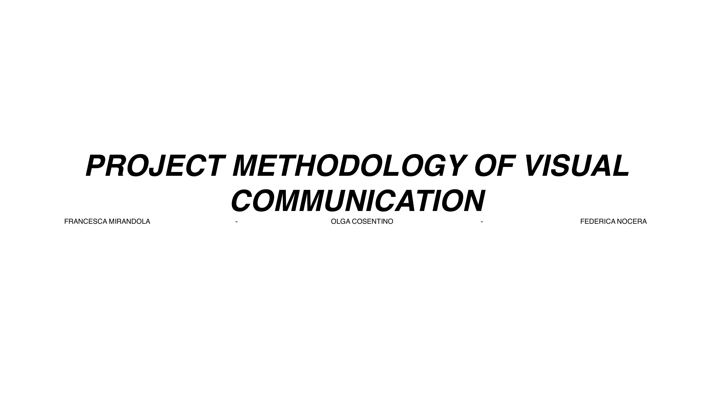
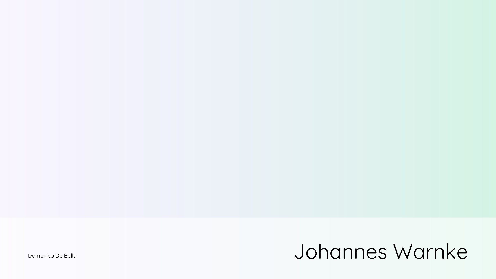

Patricia Marti &Raquel TorresOpen Project (PDF)Sofie D'HooreFashion Digital Marketing · NABA · 2025–2026Project Methodology of Visual Communication  Explore the course & methodologyCourse syllabusProduct / Values / People framework
Andrea Susan Sheahan &Elisa Baoli Obon RubioOpen Project (PDF)OttolingerFashion Digital Marketing · NABA · 2025–2026Project Methodology of Visual Communication  Explore the course & methodologyCourse syllabusProduct / Values / People framework
Francesca MirandolaOpen Project (PDF)Retori — Memorie IbrideFashion Design · MA · NABA · 2025–2026Project Methodology of Visual Communication  Explore the course & methodologyCourse syllabusProduct / Values / People framework
Domenico De BellaOpen Project (PDF)Johannes WarnkeFashion Design · MA · NABA · 2025–2026Project Methodology of Visual Communication  Explore the course & methodologyCourse syllabusProduct / Values / People framework